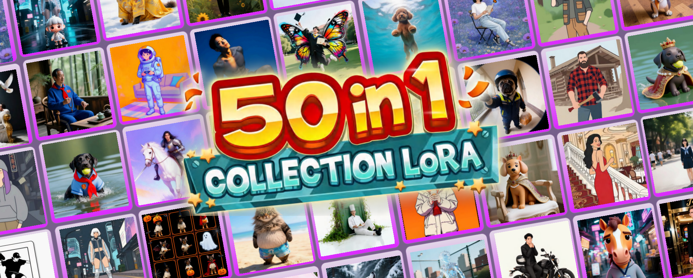
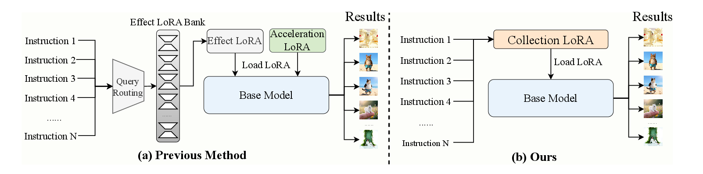
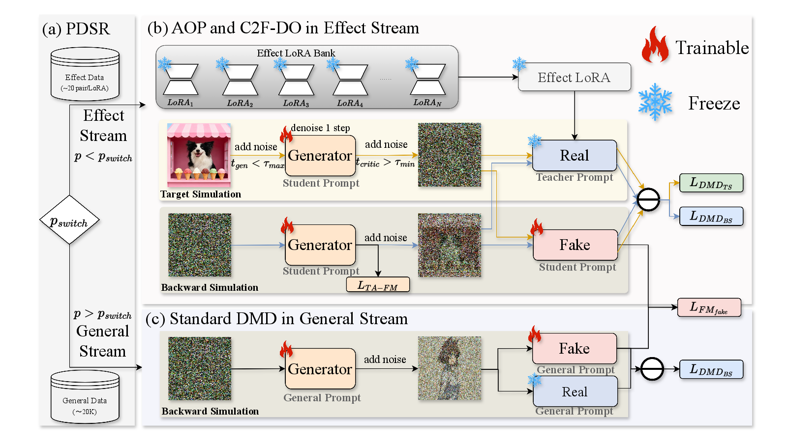
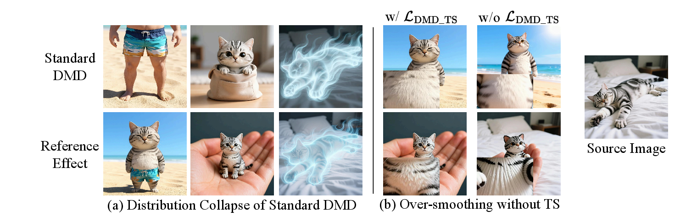
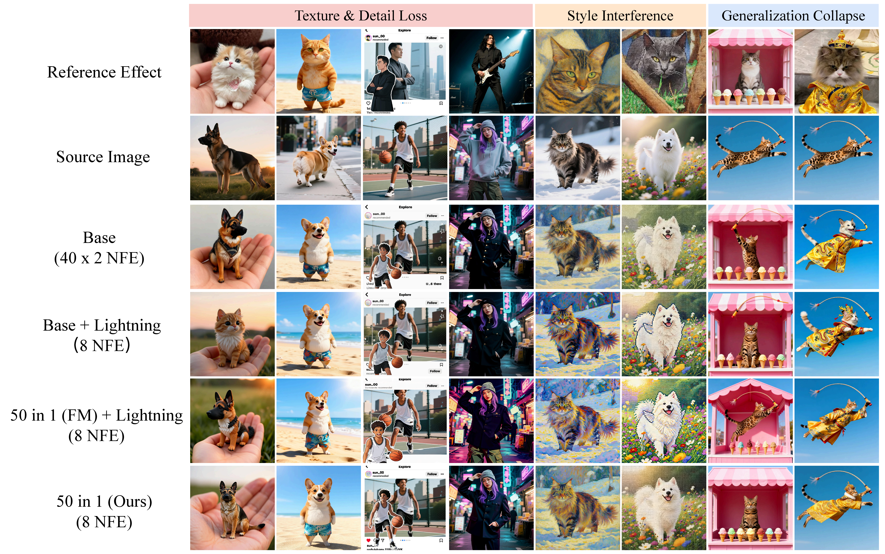
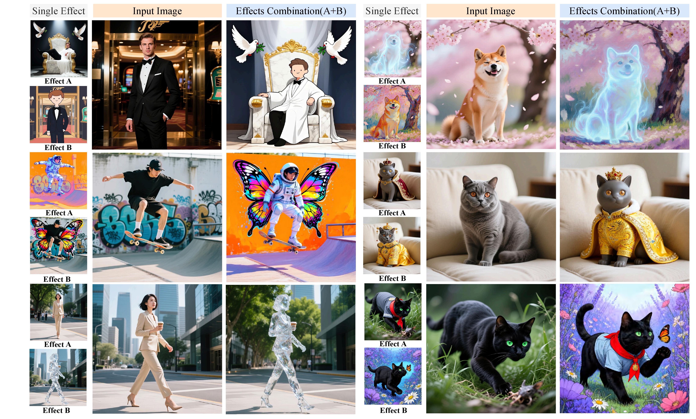
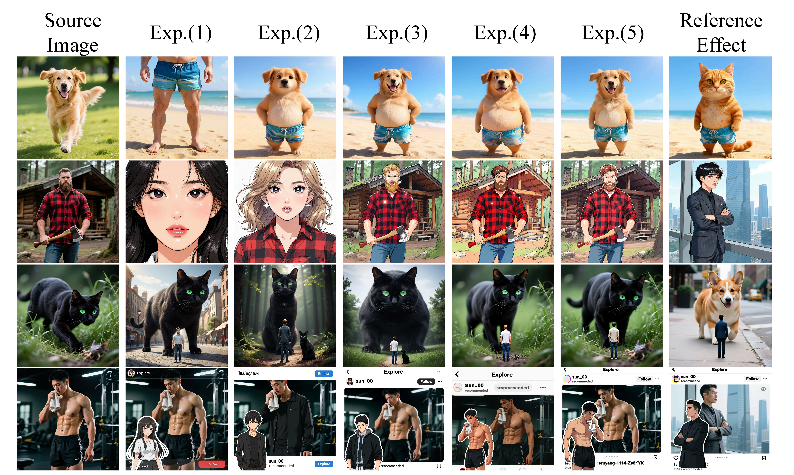
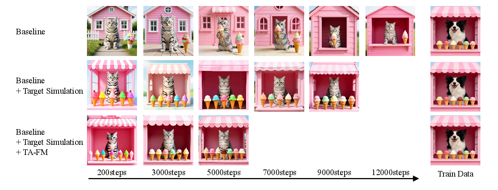
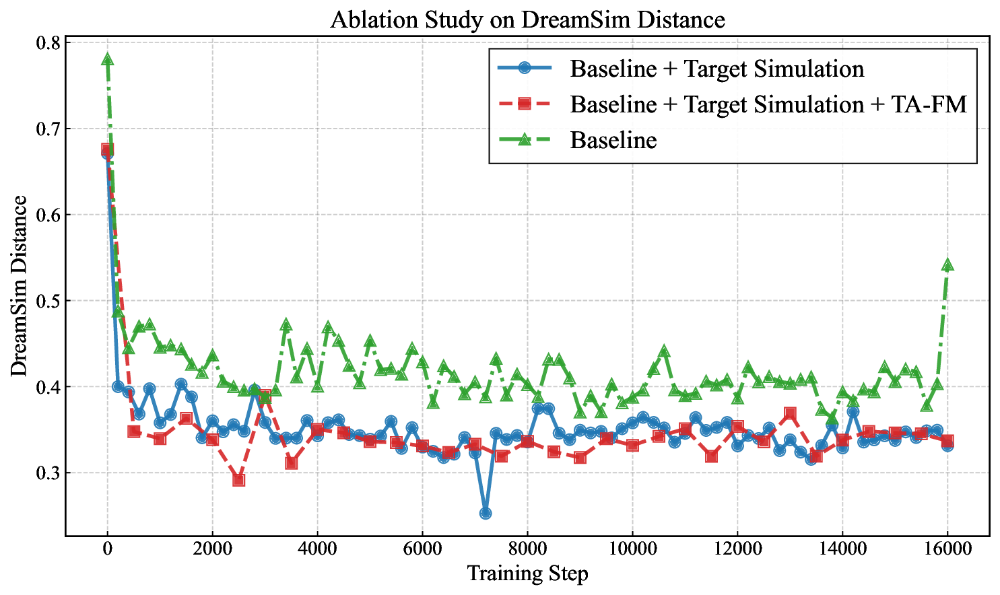
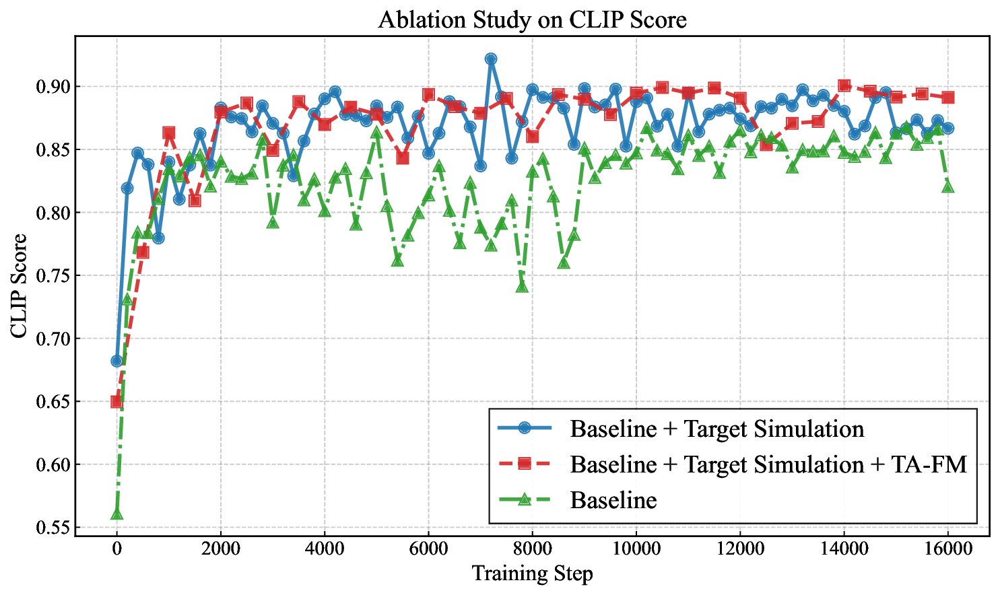

* Corresponding authors | † Project leader

We propose CollectionLoRA, a multi-teacher on-policy distillation framework that consolidates diverse effects and few-step inference capabilities into a single LoRA.
Customized image editing equips pre-trained diffusion models with specific visual effects through Low-Rank Adaptation (LoRA). As the number of desired effects grows, storing and dynamically loading numerous effect LoRAs becomes prohibitively expensive at deployment, and cascading them with acceleration LoRAs causes severe parameter interference, leading to concept bleeding and style degradation.
We propose CollectionLoRA, a multi-teacher on-policy distillation framework that distills up to 50 different effect LoRAs together with few-step generation capabilities into a single LoRA, fundamentally resolving feature interference while significantly reducing deployment overhead. The method introduces (i) a Probabilistic Dual-Stream Routing mechanism that randomly switches between data sources to enhance generalization on unseen scenarios; (ii) an Asymmetric Orthogonal Prompting strategy that achieves concept isolation in the prompt space; and (iii) a Coarse-to-Fine Distillation Objective that mitigates the distribution gap between the teacher and student models. Extensive experiments show that CollectionLoRA matches or surpasses independently trained teachers in concept fidelity at a fraction of the deployment cost.

Conventional pipeline (left): each effect is trained as a separate LoRA and cascaded with an acceleration LoRA at inference, incurring storage cost, routing latency, and parameter interference. CollectionLoRA (right): a single distilled LoRA absorbs all effects together with the acceleration prior, eliminating runtime routing and parameter conflicts.

Overall framework. (a) PDSR routes each batch into the effect or general stream with probability $p_{\text{switch}}$. (b) The effect stream applies AOP and C2F-DO: trajectory anchoring stabilizes the cold start, while target / backward simulation restore detail and global distribution. (c) The general stream performs standard DMD on unlabeled images to prevent catastrophic forgetting.

(a) Standard DMD collapses to an intermediate manifold under multi-teacher distillation. (b) Trajectory anchoring alone over-smooths textures; adding target simulation restores realistic high-frequency detail.
50 effects in one LoRA, 8 NFE, evaluated on EffectBench.
| Setting | Method | CLIP ↑ | DreamSim ↓ | DINO ↑ | VSA ↑ | EditReward ↑ | BCR ↓ | NFE ↓ |
|---|---|---|---|---|---|---|---|---|
| Single effect | Base | 0.726 | 0.434 | 0.611 | 4.075 | 1.007 | 0.141 | 40×2 |
| Base + Lightning | 0.717 | 0.441 | 0.612 | 3.901 | 0.986 | 0.168 | 8 | |
| 50 effects in 1 | FM + Lightning | 0.703 | 0.468 | 0.611 | 4.150 | 0.929 | 0.217 | 8 |
| Ours | 0.727 | 0.425 | 0.600 | 4.380 | 1.052 | 0.087 | 8 |
With a single LoRA at 8 NFE, CollectionLoRA outperforms per-effect Base teachers on most metrics and substantially reduces Bad Case Ratio (BCR).
| Method | 10 LoRAs | 20 LoRAs | 50 LoRAs | 100 LoRAs | 180 LoRAs |
|---|---|---|---|---|---|
| Base | 0.735 | 0.724 | 0.726 | 0.723 | 0.724 |
| Base + Lightning | 0.716 | 0.712 | 0.717 | 0.717 | 0.722 |
| All-in-1 (FM) + Lightning | 0.725 | 0.722 | 0.703 | 0.694 | 0.689 |
| All-in-1 (Ours) | 0.741 | 0.723 | 0.727 | 0.716 | 0.709 |
Our unified model scales to 180 effects while staying competitive with per-effect baselines, dramatically reducing storage and routing cost.
| Metric | Method | 10 | 20 | 50 | 100 | 150 |
|---|---|---|---|---|---|---|
| Routing latency | Baseline | 6.88s | 6.95s | 7.09s | 7.22s | 9.18s |
| Ours | 0s | 0s | 0s | 7.22s | 9.18s | |
| Routing accuracy | Baseline | 99% | 94% | 87% | 85% | 76% |
| Ours | 100% | 100% | 100% | 90% | 82% | |
| Storage | Baseline | 2.2G×10 | 2.2G×20 | 2.2G×50 | 2.2G×100 | 2.2G×150 |
| Ours | 2.2G | 2.2G | 2.2G | 2.2G×2 | 2.2G×3 |

CollectionLoRA preserves texture detail, style purity, and OOD generalization where cascaded multi-LoRA pipelines exhibit concept bleeding and style drift.

Any two trained effects can be combined at inference time in a single forward pass—no extra fine-tuning required.
| Exp. | PDSR | AOP | TS | TA-FM | CLIP ↑ | DreamSim ↓ | DINO ↑ | VSA ↑ | EditReward ↑ | BCR ↓ |
|---|---|---|---|---|---|---|---|---|---|---|
| (1) | ✓ | 0.725 | 0.434 | 0.514 | 2.756 | 0.989 | 0.378 | |||
| (2) | ✓ | ✓ | 0.732 | 0.427 | 0.525 | 3.720 | 1.008 | 0.207 | ||
| (3) | ✓ | ✓ | ✓ | 0.736 | 0.420 | 0.541 | 4.018 | 0.979 | 0.199 | |
| (4) | ✓ | ✓ | ✓ | 0.727 | 0.426 | 0.590 | 4.248 | 0.976 | 0.108 | |
| (5) | ✓ | ✓ | ✓ | ✓ | 0.727 | 0.425 | 0.600 | 4.380 | 1.052 | 0.087 |
Component ablation under the 50-in-1 concurrent setting. ✓ indicates the module is enabled. Best values per metric are bold. The full configuration (5) achieves the best DINO, VSA, EditReward, and BCR.

Qualitative ablation. Removing PDSR, AOP, TS, or TA-FM leads to visible degradation in concept fidelity, texture detail, or style purity, while the full model preserves all of them.

Training dynamics. Adding TA-FM and target simulation yields more stable convergence and higher fidelity than vanilla DMD.

Style distance. DreamSim vs. optimization step.

Alignment. CLIP score vs. optimization step.
Additional qualitative panels covering 50 effects under the same student model. · hover to pause
@misc{wu2026collectionloracollecting50effects,
title={CollectionLoRA: Collecting 50 Effects in 1 LoRA via Multi-Teacher On-Policy Distillation},
author={Fangtai Wu and Hailong Guo and Shijie Huang and Jiayi Song and Yubo Huang and Mushui Liu and Zhao Wang and Yunlong Yu and Jiaming Liu and Ruihua Huang},
year={2026},
eprint={2605.25378},
archivePrefix={arXiv},
primaryClass={cs.CV},
url={https://arxiv.org/abs/2605.25378},
}